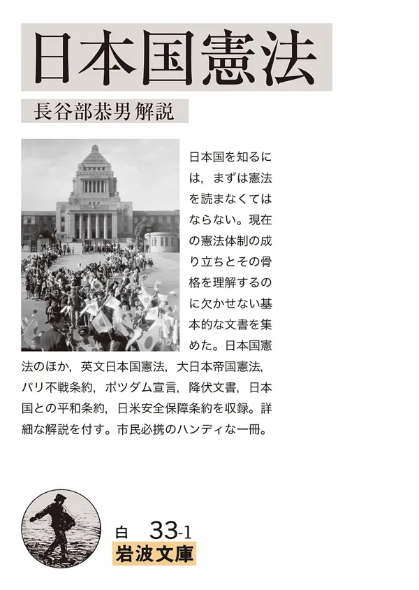

戦後日本の憲法体制はいかにして成り立ち、その骨格とはどのようなものか。これを理解するのに欠かせない基本的な文書を集めた。日本国憲法のほか、英文日本国憲法、大日本帝国憲法、パリ不戦条約、ポツダム宣言、降伏文書、日本国との平和条約、日米安全保障条約を収録し、詳細な解説を付す。市民必携のハンディな一冊。

戦後日本の憲法体制はいかにして成り立ち、その骨格とはどのようなものか。これを理解するのに欠かせない基本的な文書を集めた。日本国憲法のほか、英文日本国憲法、大日本帝国憲法、パリ不戦条約、ポツダム宣言、降伏文書、日本国との平和条約、日米安全保障条約を収録し、詳細な解説を付す。市民必携のハンディな一冊。
急遽Kindleで借りた👏 #オンライン反戦読書デモ0719

良企画……！ 日本国憲法さん、日本国憲法(本)です。 日本国憲法(本)、日本国憲法さんです。 #きみちぎ #オンライン反戦読書デモ0719

ポストを表示する（Xで開く）
#オンライン反戦読書デモ0719 岩波文庫『日本国憲法』